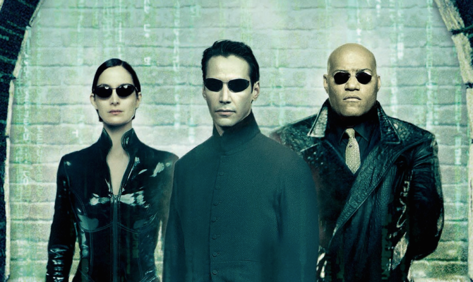
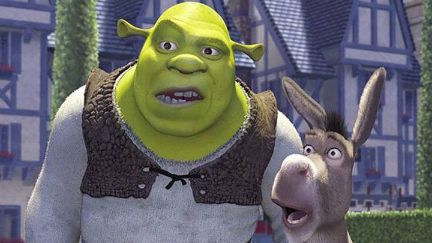
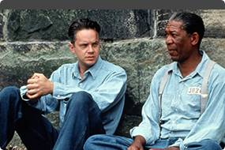
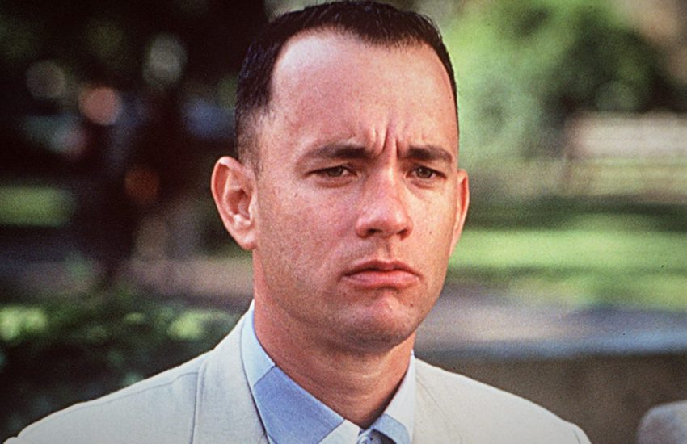
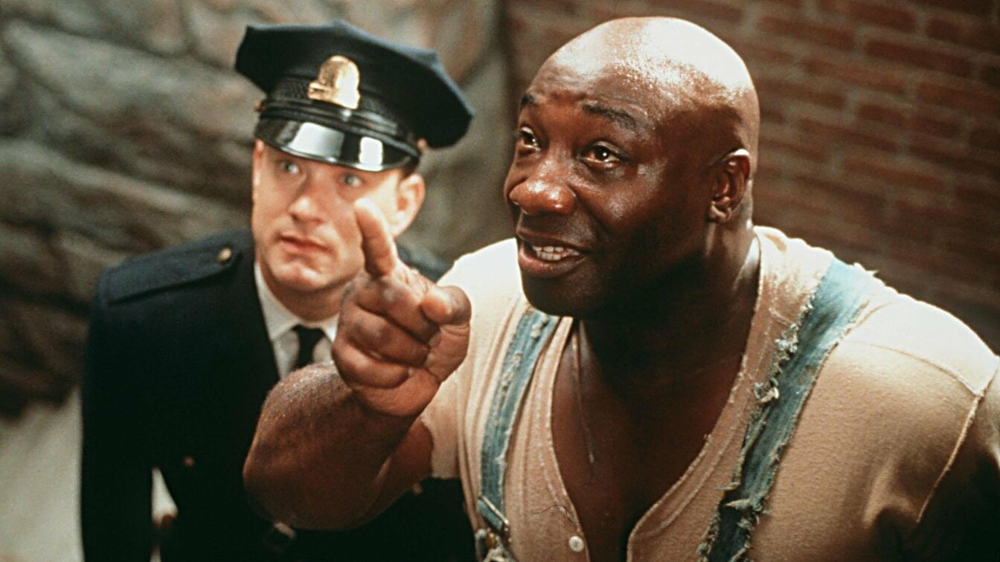

Матрица
Жизнь Томаса Андерсона разделена на две части: днём он — самый обычный офисный работник, получающий нагоняи от начальства, а ночью превращается в хакера по имени Нео, и нет места в сети, куда он бы не смог проникнуть. Но однажды всё меняется. Томас узнаёт ужасающую правду о реальности.

Шрэк
Жил да был в сказочном государстве большой зеленый великан по имени Шрэк. Жил он в гордом одиночестве в лесу, на болоте, которое считал своим. Но однажды злобный коротышка — лорд Фаркуад, правитель волшебного королевства, безжалостно согнал на Шрэково болото всех сказочных обитателей.
И беспечной жизни зеленого великана пришел конец. Но лорд Фаркуад пообещал вернуть Шрэку болото, если великан добудет ему прекрасную принцессу Фиону, которая томится в неприступной башне, охраняемой огнедышащим драконом.

Побег из Шоушенка
Успешный банкир Энди Дюфрейн обвинен в убийстве собственной жены и ее любовника. Оказавшись в тюрьме под названием Шоушенк, он сталкивается с жестокостью и беззаконием, царящими по обе стороны решетки. Каждый, кто попадает в эти стены, становится их рабом до конца жизни. Но Энди, вооруженный живым умом и доброй душой, отказывается мириться с приговором судьбы и начинает разрабатывать невероятно дерзкий план своего освобождения.
Наркоз
Клай Бересфорд вынужден лечь под нож. Однако в процессе операции на сердце он неожиданно приходит в себя. Находясь в парализованном состоянии, будучи не в силах пошевелить ни рукой, ни ногой, он, тем не менее, чувствует каждое касание скальпеля к своей плоти…

Форест Гамп
От лица главного героя Форреста Гампа, слабоумного безобидного человека с благородным и открытым сердцем, рассказывается история его необыкновенной жизни.
Фантастическим образом превращается он в известного футболиста, героя войны, преуспевающего бизнесмена. Он становится миллиардером, но остается таким же бесхитростным, глупым и добрым. Форреста ждет постоянный успех во всем, а он любит девочку, с которой дружил в детстве, но взаимность приходит слишком поздно.

WALL·E
Робот ВАЛЛ·И из года в год прилежно трудится на опустевшей Земле, очищая нашу планету от гор мусора, которые оставили после себя улетевшие в космос люди. Он и не представляет, что совсем скоро произойдут невероятные события, благодаря которым он встретит друзей, поднимется к звездам и даже сумеет изменить к лучшему своих бывших хозяев, совсем позабывших родную Землю.
1+1
Пострадав в результате несчастного случая, богатый аристократ Филипп нанимает в помощники человека, который менее всего подходит для этой работы, – молодого жителя предместья Дрисса, только что освободившегося из тюрьмы. Несмотря на то, что Филипп прикован к инвалидному креслу, Дриссу удается привнести в размеренную жизнь аристократа дух приключений.

Астрал
Джош и Рене переезжают со своими детьми в новый дом, но не успевают толком распаковать вещи, как начинаются странные события. Необъяснимо перемещаются предметы, в детской звучат странные звуки… Но в настоящий ужас приходят родители, когда их десятилетний сын Далтон впадает в кому. Все усилия врачей в больнице помочь мальчику безуспешны.

Зеленая миля
Пол Эджкомб - начальник блока смертников в тюрьме «Холодная гора», каждый из узников которого однажды проходит «зеленую милю» по пути к месту казни. Пол повидал много заключённых и надзирателей за время работы. Однако гигант Джон Коффи, обвинённый в страшном преступлении, стал одним из самых необычных обитателей блока.

Гравитация
Доктор Райан Стоун, блестящий специалист в области медицинского инжиниринга, отправляется в свою первую космическую миссию под командованием ветерана астронавтики Мэтта Ковальски, для которого этот полет — последний перед отставкой. Но во время, казалось бы, рутинной работы за бортом случается катастрофа.
Шаттл уничтожен, а Стоун и Ковальски остаются совершенно одни; они находятся в связке друг с другом, и все, что они могут, — это двигаться по орбите в абсолютно черном пространстве без всякой связи с Землей и какой-либо надежды на спасение.
 Обо мне
Обо мне
 Мое хобби
Мое хобби